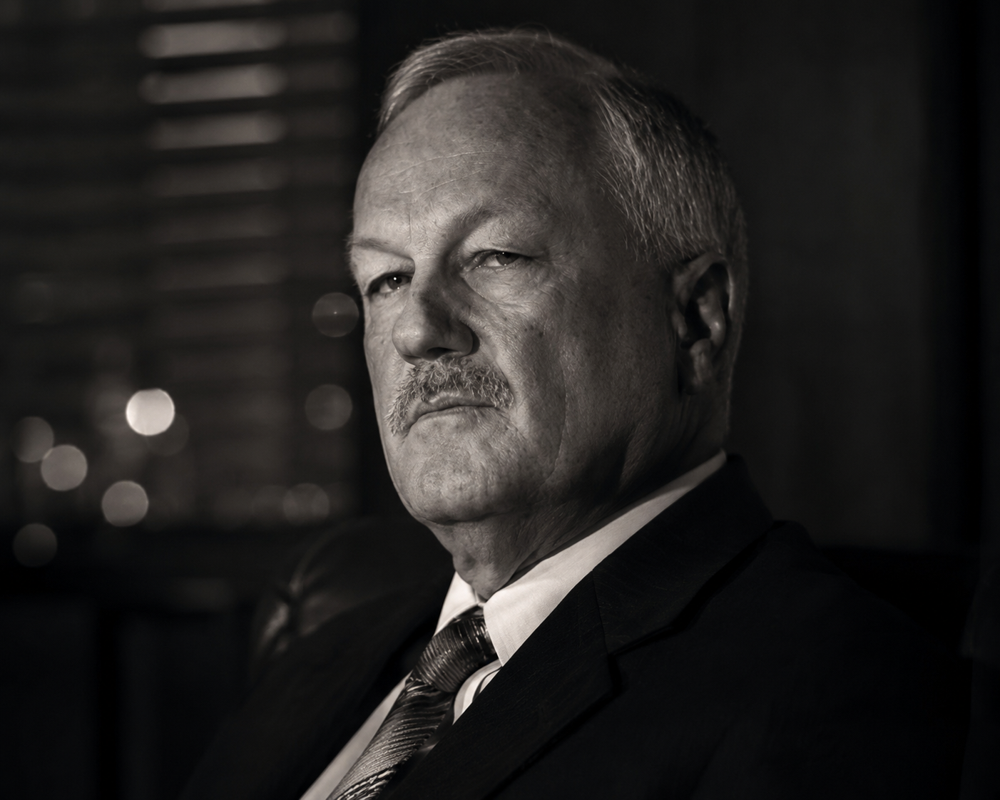
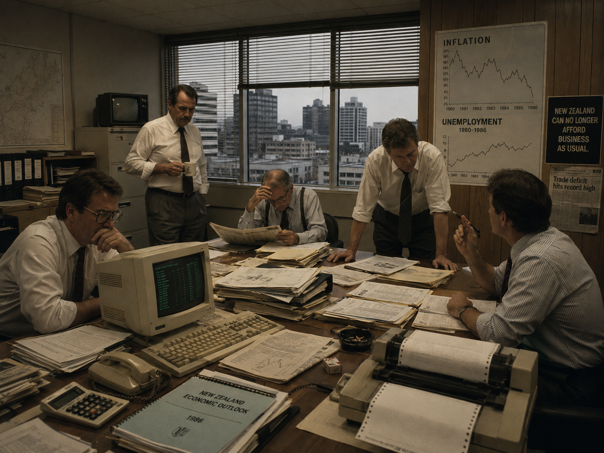
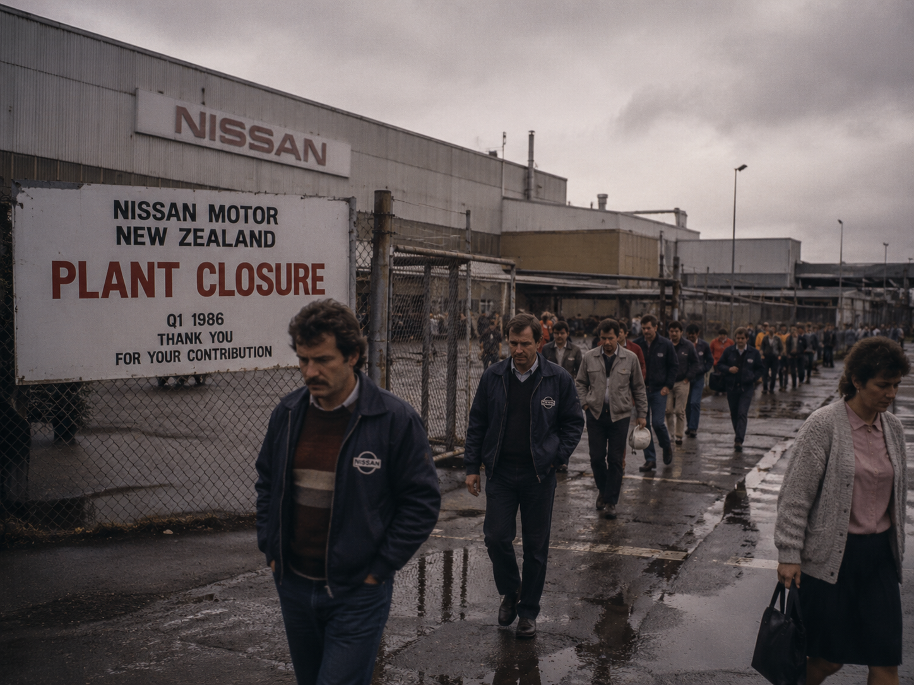
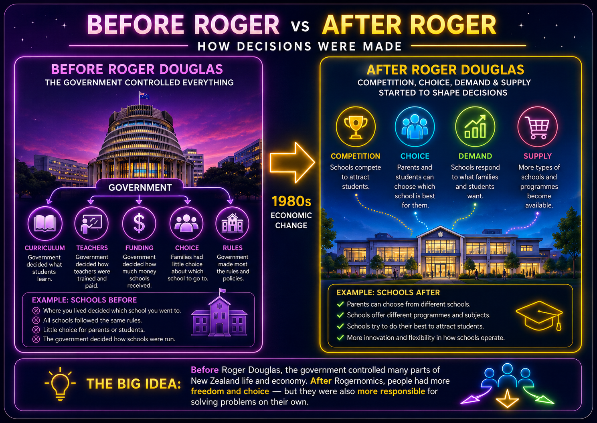

Who Was Roger Douglas?
A simple guide to the job, the power, and the debate behind Rogernomics.
What Is a Finance Minister?
A finance minister is the person in government who helps make the big decisions about a country’s money. They do not own the money, and they do not make every decision alone, but they are one of the key people who helps decide how the government will collect money, spend money, borrow money, and plan for the future.

A Call for Change
Roger Douglas believed New Zealand’s economy was struggling and needed major change. He argued that the government was controlling too many prices, businesses, and industries, and that this was holding the country back.
His answer was to make fast changes: fewer rules, more competition, less government support for some industries, and stronger links with the world economy.

The economic changes Roger Douglas introduced became known as Rogernomics. The name joined “Roger” with “economics” because his ideas changed the way New Zealand managed money, businesses, and government spending.
Fast Changes, Big Effects
These changes happened quickly and affected many parts of New Zealand life. Some people believed Rogernomics helped modernise New Zealand, while others believed the changes hurt workers and communities.

Before Roger vs After Roger
This diagram helps explain how New Zealand changed during the 1980s. Before Rogernomics, the government controlled many decisions. After the reforms, ideas like competition, choice, supply, and demand became more important.

1980s Economic Change
The Problem
Douglas believed the economy was struggling and needed a new direction.
The Changes
Rules and controls were reduced so businesses could make more of their own decisions.
The Debate
People disagreed about whether the changes made New Zealand stronger or hurt ordinary communities.
Why do people still debate Rogernomics today?
People still debate Rogernomics because the changes were large, fast, and personal. They shaped jobs, businesses, communities, and the way New Zealand thought about the economy. For some people, Rogernomics meant modernisation. For others, it meant pressure, uncertainty, and loss.